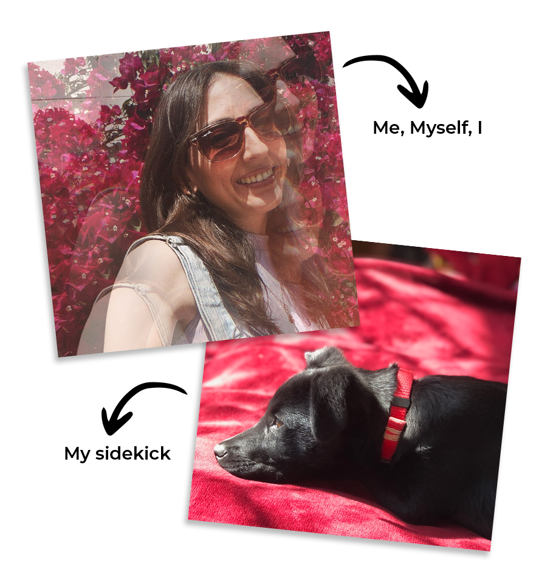

hello, there!
---
Senior multimedia graphic designer who has been working in the creative field for the past 7 years.
Specialized in design direction through image-making and illustration.
Highly skilled and enabled to work on identity design, marketing campaigns, and art direction.
